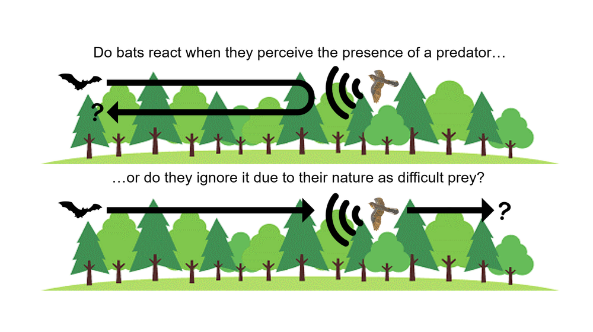

Foraging Behavior in Bats
My current research is taking place on Fort Campbell Military Installation along the border of Kentucky and Tennessee just Northwest of Clarksville, TN. As a part of the Haase Lab at Austin Peay State University, my project is being overseen and advised by Dr. Catherine Haase. I am currently studying the effects of perceived increased predator presence on the foraging behavior of local species.
*Handling bats can be dangerous. Do not try this at home! All research is conducted under the proper federal and state permits, and approved under IACUC 23.008 from Austin Peay State University. Members of the lab have been properly trained and immunized to handle chiroptera species.
Bat populations are declining
Cave dwelling bats in North America have been ravaged by a fungus known as Pseudogymnoascus destructans, commonly called PD, that causes white-nose syndrome. This disease affects cave dwelling bats by forcing them to arouse too often during hibernation which makes them burn through their fat stores and starve to death. Understanding how external pressure affects their behavior is important for proper conservation.
Predation has direct and indirect effects...
Not only do predators directly affect populations by taking individuals for consumption, but they can affect their behavior in ways that can be detrimental. Fear may cause them to change their foraging behavior by foraging less or abandoning fruitful sites for subpar sites to mitigate predation risk. This can have a negative effect on overall populations, but we don’t have a good grasp on how bats respond to predators. This is the study of fear driven ecology.
Picture of a Plot Showing Red-Tailed Hawk Decoy and Sound Enclosure

To test the the temporal and spatial changes bats may make to mitigate predation risk we designed an experiment which will manipulate the natural environment of bats by increasing the perception that predators may be present. We accomplished this through broadcasting pre-recorded calls of nocturnal predators and using predator decoys as visual cues. Each site was sampled for two weeks, week one as control, week two as treatment.